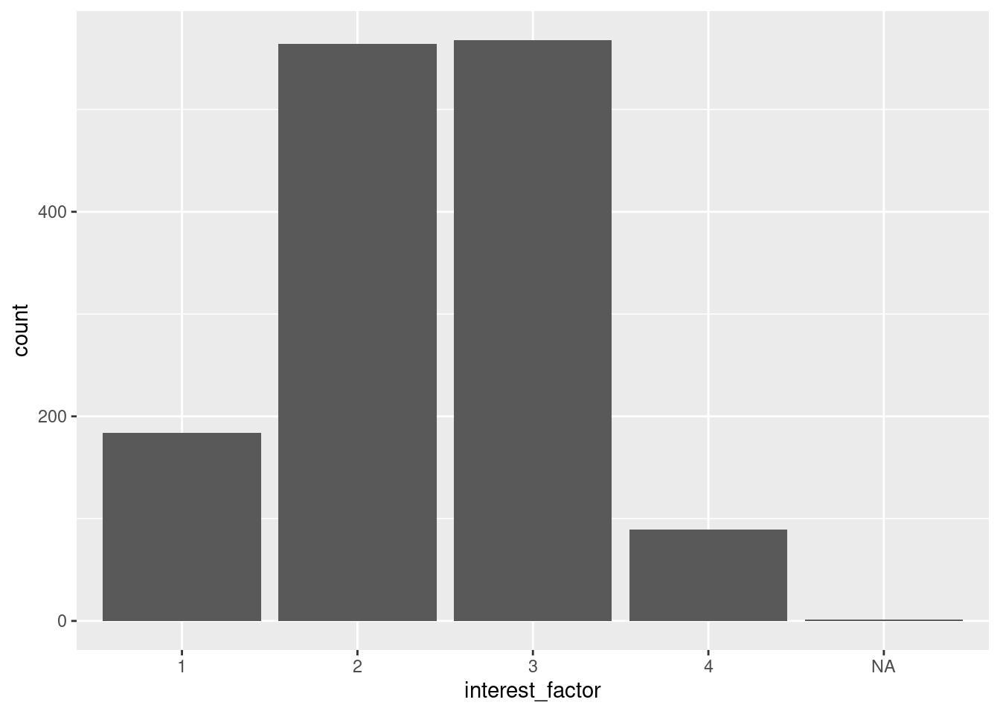
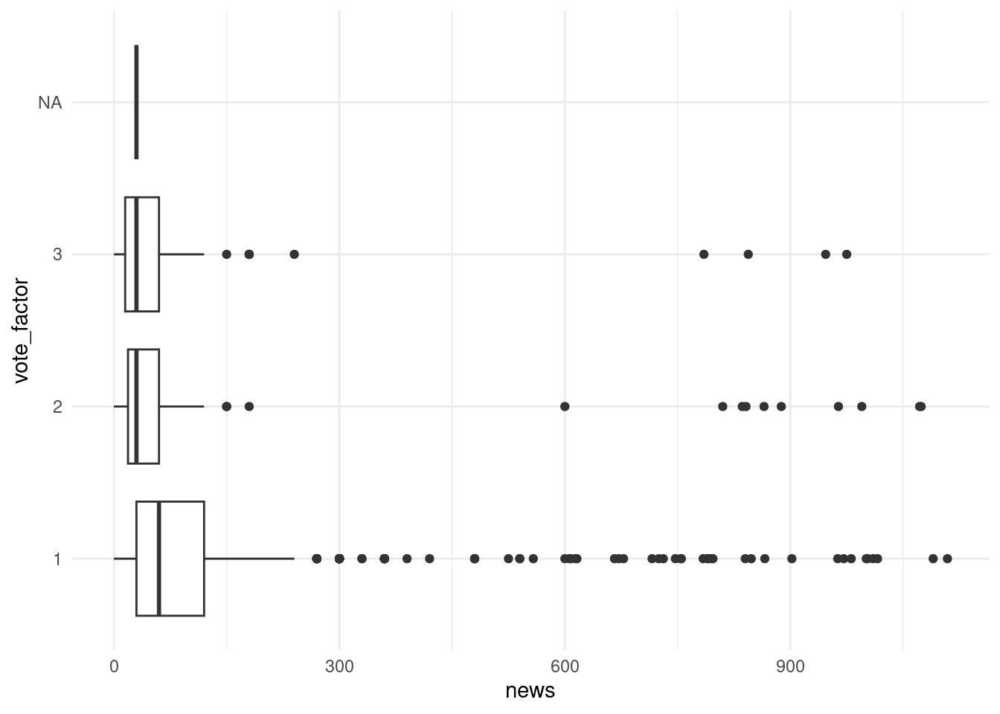

setwd("~/Dokumenter/STV1020")Seminar 2 – Laste og jobbe med data
På andre seminar skal vi se på det følgende:
- Organisering av arbeidet
- Pakker
- Laste inn data
- Organisering av data
- Klasser og målenivå
- Deskriptiv statistikk
- Plotting
Organisering av arbeidet
Når vi jobber R så kan vi organisere arbeidet vårt på to måter: 1. Bruke prosjekter 2. Sette working directory
Working directory angir den mappen vi ønsker å hente og lagre filer til. Du kan tenke på det som den mappen du lagret prosjektfilen din i på første seminar. Når du åpner prosjektfilen din så husker R hvilken mappe dette er, men dersom du ikke jobber i prosjekt må du fortelle R hvilken mappe du vil hente og lagre filer i.
Om du ikke jobber i prosjekt så kan du enten bruke setwd("filbane") eller trykke deg frem via verktøylinjen. Da velger du Session > Set Working Directory > Choose Directory og klikker deg frem til mappen din.
Her er et eksempel på bruk av setwd():
I dette seminaret skal vi bruke et datasett fra European Social Survey Round 9 (2018). Dette datasettet inneholder svarene fra norske respondenter. Filen heter “ess.csv” og kan lastes ned fra Canvas eller fra denne lenken.
Pass på at du har lagret datasettet vi skal bruke i dag i samme mappe som du har prosjektfilen din i eller mappen som du setter som working directory.
Overskrifter og tekst
Hvordan man organiserer et R-script kommer an på hva man selv synes er mest oversiktlig, men det er viktig at man klarer å holde oversikt over hva man har kodet og forstår hva man har gjort når man kommer tilbake til et script.
Det er lurt å lage overskrifter for å huske hva du tenker at koden din skal gjøre. Dersom du velger overskriftformatet “# Overskrift —-” så vil R automatisk gi deg muligheten til å gjemme koden under overskriften. Om du trykker på “Show document outline” i menylinjen til høyre over scriptet ditt kan du også få opp en innholdsfortegnelse basert på overskriftene dine.

Det kan også være lurt å inkludere kommentarer i scriptet ditt som forklarer hva du gjør. Tekst som ikke skal leses av R skriver man etter emneknagg (#). Vi glemmer fort så det er en god idé å tenke at du skal kunne se tilbake på dette scriptet om et år igjen og skjønne hva du har gjort:
Til sist så er det lurt å ikke skrive for mange tegn før du bytter linje. The tidyverse style guide anbefaler at en begrenser antall tegn til 80 per linje. R teller for hvor mange tegn du har per linje til venstre nedenfor scriptet ditt. Tidyverse sin stilguide inneholder også flere tips til hvordan man kan skrive lettleselig kode.
Pakker
R-pakker er utvidelser til programmeringsspråket R. De inneholder kode, data, og dokumentasjon som gir oss tilgang til funksjoner som løser ulike problemer og gjør koding enklere. Første gang man skal bruke en pakke må man installere den. Etter at vi har installert pakken så må vi “hente den fra biblioteket” for å fortelle R at vi ønsker å bruke pakken. Dette må vi gjøre hver gang vi åpner R på nytt og ønsker å bruke pakken.
Den første pakken vi skal installere er Tidyverse. Tidyverse er et sett med pakker som gjør databehandling mye, mye enklere. Føst installerer vi pakken. Om dere har gjort dette på forhånd trenger dere ikke gjøre dette på nytt. Å installere gjør vi kun en gang. Vi installerer pakker ved hjelp av funksjonen install.packages("pakkenavn"):
install.packages("tidyverse")Det neste vi gjør er å laste inn pakken ved hjelp av library():
library(tidyverse)── Attaching packages ─────────────────────────────────────── tidyverse 1.3.2 ──
✔ ggplot2 3.4.1 ✔ purrr 1.0.1
✔ tibble 3.2.0 ✔ dplyr 1.1.0
✔ tidyr 1.3.0 ✔ stringr 1.5.0
✔ readr 2.1.4 ✔ forcats 1.0.0
── Conflicts ────────────────────────────────────────── tidyverse_conflicts() ──
✖ dplyr::filter() masks stats::filter()
✖ dplyr::lag() masks stats::lag()Merk at pakkenavnet ikke står i hermetegn når vi bruker library(). Hermetegn rundt pakkenavnet er bare nødvendig når vi bruker install.packages().
Laste inn data
Dersom dere skal gjøre statistisk analyse, er som regel den første seksjonen import og forberedelse av data. En styrke ved R, er at det er mulig å importere mange ulike filtyper, både fra en mappe på pcen din og fra en url på internett. Det er også mulig å ha flere datasett oppe i R samtidig. Vi går gjennom import av filer fra excel, stata, spss og R i dette dokumentet, men vit at det finnes mange andre muligheter. Hvis man lurer på hvordan man skal laste inn en bestemt filtype og har glemt hvordan man gjør det så er dette veldig lett å finne på internett.
Når du skal laste inn eller lagre noe lokalt på pc-en så vil R til enhver tid forvente at filen du refererer til befinner seg i working directory. Som vi husker så er working directory en mappe på pcen din; enten den du har lagret prosjektet ditt i eller den du har satt som working directory ved hjelp av setwd(). For å sjekke hva nåværende working directory er, og hvilke filer som finnes i den mappen, kan du skrive følgende kode:
getwd()[1] "/home/martigso/Dropbox/postdoc/undervisning/stv1020/v23/stv1020/seminar"list.files()[1] "seminar1_files" "seminar1.html" "seminar1.qmd"
[4] "seminar2.qmd" "seminar2.rmarkdown" "seminar3.qmd"
[7] "seminar4.qmd" "seminar5.qmd" "seminar6.qmd" Datasett kommer i mange ulike filformater. Noen vanlige formater er csv, dta (Stata-datasett), sav (SPSS-datasett) og Rdata. Hvilket format dataene dine har bestemmer hvilken funksjon du må bruke for å laste inn datasettet. For det meste så følger funksjonene dette formatet:
# Laster inn og lagrer datasettet som et objekt:
datasett <- read_filtype("filbane/filnavn.filtype")For eksempel så er datasettet vi skal bruke i dag en dta-fil (STATA filtype). Pakken haven inneholder funksjoner for å lese dta-filer og sav-filer. Det første vi gjør er derfor å installere og laste inn haven.
install.packages("haven")library(haven)
datanavn <- read_dta("data/filnavn.dta")Her er eksempler på noen andre funksjoner for å laste inn data:
# For csv-format:
datanavn <- read_csv("data/filnavn.csv")
# For filer i Rdata-format:
load("data/filnavn.Rdata")For å laste inn en excel-filer bruker vi pakken readxl:
install.packages("readxl")
library(readxl)
datanavn <- read_excel("data/filnavn.xlsx")Hvis du lurer på hvordan du kan finne ut hvilken pakke og funksjon du skal bruke for å laste inn en annen type filformat kan du søke det opp.
Laste inn ESS
Vi kan laste inn data vi skal bruke på seminar 2 – ess.csv – med følgende kode:
ess <- read.csv("../data/ess.csv", encoding = "UTF-8")I denne boka ligger mappen “data” i en mappe som er et nivå under der koden for seminar 2 ligger. Derfor starter read.csv() med .., som betyr “gå en mappe tilbake”. Deretter går vi inn i “data”-mappen og så spesifiserer vi at vi vil lese filen “ess.csv” med read.csv(). Du må selv tilpasse filplasseringen i denne funksjone til hvor du jobber fra i R og hvor du har lagt filen selv. Når filen er lastet inn, skal den ligge i vinduet “Environment” øverst til høyre i RStudio. Her er noen nyttige filbanekoder:
| Kode | Beskrivelse |
|---|---|
"~/" |
På Mac og Linux er dette “Home”, på Windows er det brukermappen “C:/Users/brukernavn” |
"C:/" |
For Windowsbrukere; disken du jobber fra |
"./" |
Mappen du er i nå, kan vises med: getwd("./") |
"../" |
En mappe tilbake fra der du er nå: getwd("../") |
"./data" |
Fra der jeg er nå, gå inn i mappen “data” |
"../data" |
Fra der jeg er nå, gå tilbake en mappe og så inn i mappen “data” |
"./seminar2/R" |
Fra der jeg er nå, gå inn i mappen “seminar2” og så inn i mappen “R” |
"../../R" |
Fra der jeg er nå, gå tilbake to mapper og så inn i mappen “R” |
Du kan også validere om du har gjort riktig ved å kjøre:
dim(ess)[1] 1406 572Det skal da komme opp samme output i din console – [1] 1406 572 – som betyr at det er 1406 enheter i datasettet og 572 variabler.
Organisering av data
Når man bruker større datasett som ESS, så inneholder datasettet ofte mange flere variabler enn de vi ønsker å bruke i våre analyser og variablene har navn som kan være vanskelig å huske, f.eks. nwspol. For å finne ut hvilken informasjon variablene inneholder så kan vi slå opp i kodeboken. Kodeboken til ESS finner dere her. ESS inneholder også mange landspesisifkke variabler og kodeboken er derfor veldig lang.
Når vi skal jobbe videre med data så kan det være lurt å fjerne de variablene vi ikke skal bruke og gi variablene navn som er lette for oss å forstå og huske. For å gjøre dette skal vi benytte oss av funksjoner i tidyverse. Først bruker vi select() til å velge de variablene vi vil beholde og så bruker vi rename() til å endre navnene. Vi bruker en pipe %>%1 mellom funksjonene, som tar outputen til et utsagn og gjør det til inputen til det neste utsagnet. Pipen kan sees på som ordet “så”. rename() lar oss forandre navnet til variabler og bruker syntaksen rename(nytt_navn = gammelt_navn).
ess_subset <- ess %>%
select(nwspol, polintr, vote, yrbrn) %>%
rename(news = nwspol, interest = polintr, year_born = yrbrn)Dersom du har sjekket kodeboken på forhånd så kan du også endre variablenavnene når du bruker select():
ess_subset <- ess %>%
select(vote, news = nwspol, interest = polintr, year_born = yrbrn)Vi kan regne oss frem til alder ved å bruke variabelen year_bornog informasjonen om at undersøkelsen ble gjennomført i 2018:
ess_subset$age <- 2018 - ess_subset$year_bornKlasser og målenivå
I forelesning gås det gjennom tre ulike målenivåer; kategorisk, ordinalt og kontinuerlig. Disse sammenfaller til en viss grad med noen av klassene i R. Men det er viktig å huske at R ikke vet hvilken klasse en variabel har så dere kan ikke nødvendigvis bruke dette til å sjekke variabelens målenivå. Det viktige er at dere gir R riktig informasjon om hvilket målenivå en variabel har.
Kategorisk
Når variabler er kategoriske så kan egenskapen deles i to eller flere gjensidig utelukkende kategorier. I ESS datasettet vårt er variabelen “vote” kategorisk; man har enten stemt, ikke stemt, eller så er man ikke berettiget til å stemme. Dette kan vi se i utklippet fra kodeboken.
Vi kan sjekke hvilken klasse variabelen har ved hjelp av class()
class(ess_subset$vote)[1] "integer"Her får vi opp klassene integer som betyr heltall, mens double betyr at variabelen nå er lagret som en numerisk variabel. På variabler med kategorisk eller ordinalt målenivå kan vi bruke funksjonen table() til å få oversikt over verdiene:
table(ess_subset$vote)
1 2 3
1156 124 125 Som vi ser her så fremstår variabelen som om den er kontinuerlig/numerisk med tallverdier, men vi har lest kodeboken og vet at den er kategorisk. Dersom vi vil endre klassen på variabelen til en faktor så det samsvarer bedre med målenivået så kan vi bruke funksjonen as.factor() for å opprette en ny variabel:
# Lager en ny variabel i datasettet som heter vote_factor
ess_subset$vote_factor <- as.factor(ess_subset$vote)Vi kan nå se nærmere på hvilke verdier den nye variabelen vote_factor tar ved hjelp av levels() og klassen ved hjelp av class():
# Sjekker faktornivåene:
levels(ess_subset$vote_factor)[1] "1" "2" "3"# Sjekker klasse:
class(ess_subset$vote_factor)[1] "factor"Nå samsvarer variabelens verdier (Yes, No, osv.) og klasse (factor) bedre med det faktiske målenivået til variabelen (kategorisk).2 Vi skal jobbe mer med omkoding av variabler senere.
Ordinalnivå
Når variabler er på ordinalnivå kan de deles i to eller flere gjensidig utelukkende kategorier som kan rangeres, men vi kan ikke si noe om avstanden mellom verdiene og en enhets økning har ikke samme betydning. I ESS datasettet vår så er variabelen interest et eksempel på en variabel på ordinalnivå; i utdraget fra kodeboken ser vi at man kan være ikke interessert, lite interessert, ganske interessert, eller veldig interessert i politikk.
Vi kan sjekke klasse til denne variabelen også:
class(ess_subset$interest)[1] "integer"Som vi ser er også denne variabelen også registrert som integer. Dersom vi vil bruke denne variabelen som en kategorisk variabel så kan vi igjen bruke as.factor for å få variabelens klasse til å samsvare med målenivået:
ess_subset$interest_factor <- as.factor(ess_subset$interest)Vi sjekker faktornivåer og klasse igjen:
# Sjekker faktornivåene:
levels(ess_subset$interest_factor)[1] "1" "2" "3" "4"# Sjekker klasse:
class(ess_subset$interest_factor)[1] "factor"Dette ser også fint ut. Som dere vet fra forelesning så er behandler man ofte variabler på ordinalnivå som enten kategorisk eller kontinuerlig målenivå. Dersom vi ville beholdt denne som en kontinuerlig variabel så hadde vi ikke trengt å omkode den ved hjelp av as.factor().
Kontinuerlig
Kontinuerlige variabler kan rangeres, har samme avstand mellom alle verdier og en enhets økning betyr alltid det samme. Her er det altså snakk om variabler med faktiske tallverdier. I ESS datasettet vårt så er variabelen “news” kontinuerlig. Som vi kan se i utdraget fra kodeboken så måler variabelen hvor mange minutter man bruker på nyheter hver dag. Det er et minutts avstand mellom hver verdi, og en økning på en enhet vil alltid bety en økning på et minutt.
Vi kan sjekke klassen her også:
class(ess_subset$news)[1] "integer"is.numeric(ess_subset$news)[1] TRUEDenne variabelen er double og skal være det så her er alt i orden.
Vi vil oppfordre dere til å være obs og alltid sjekke at klassen på en variabel dere skal bruke stemmer overens med målenivået.3 I mange datasett får kategoriske og ordinale variabler ofte tall istedenfor kategorinavn som verdier og lastes inn som klassen numeric. Dette gjør at kategoriske variabler kan fremstå som at de har et høyere målenivå enn de faktisk har i R. Derfor er det alltid viktig å også sjekke kodeboken for å se hvilket målenivå variabelen faktisk har. Det kommer ikke til å stå “denne variabelen har kategorisk målenivå” så dere må gjøre en selvstendig vurdering basert på hvilke verdier variabelen har.
Utforske data
Vi skal nå bli litt bedre kjent med dataene våre. Det er mange ulike måter å utforske datasett og variabler på. Vi skal se på funksjonene summary(), str(), head() og tail().
For å få et deskriptivt sammendrag av et objekt kan vi bruke summary(), str() eller glimpse() (den siste er en del av tidyverse).
summary(ess_subset) vote news interest year_born age
Min. :1.000 Min. : 0.0 Min. :1.0 Min. :1928 Min. :15.00
1st Qu.:1.000 1st Qu.: 30.0 1st Qu.:2.0 1st Qu.:1957 1st Qu.:32.00
Median :1.000 Median : 60.0 Median :2.0 Median :1971 Median :47.00
Mean :1.266 Mean : 104.1 Mean :2.4 Mean :1971 Mean :46.54
3rd Qu.:1.000 3rd Qu.: 120.0 3rd Qu.:3.0 3rd Qu.:1986 3rd Qu.:61.00
Max. :3.000 Max. :1109.0 Max. :4.0 Max. :2003 Max. :90.00
NA's :1 NA's :34 NA's :1 NA's :32 NA's :32
vote_factor interest_factor
1 :1156 1 :184
2 : 124 2 :564
3 : 125 3 :568
NA's: 1 4 : 89
NA's: 1
str(ess_subset)'data.frame': 1406 obs. of 7 variables:
$ vote : int 1 1 1 1 1 1 1 3 1 1 ...
$ news : int 60 60 540 30 60 120 60 90 120 60 ...
$ interest : int 3 2 2 2 2 1 2 3 2 2 ...
$ year_born : int 1961 1960 1956 1967 1972 1964 1959 2000 1950 1975 ...
$ age : num 57 58 62 51 46 54 59 18 68 43 ...
$ vote_factor : Factor w/ 3 levels "1","2","3": 1 1 1 1 1 1 1 3 1 1 ...
$ interest_factor: Factor w/ 4 levels "1","2","3","4": 3 2 2 2 2 1 2 3 2 2 ...glimpse(ess_subset)Rows: 1,406
Columns: 7
$ vote <int> 1, 1, 1, 1, 1, 1, 1, 3, 1, 1, 1, 1, 1, 1, 2, 1, 1, 1, …
$ news <int> 60, 60, 540, 30, 60, 120, 60, 90, 120, 60, 120, 30, 12…
$ interest <int> 3, 2, 2, 2, 2, 1, 2, 3, 2, 2, 1, 2, 2, 3, 1, 2, 2, 3, …
$ year_born <int> 1961, 1960, 1956, 1967, 1972, 1964, 1959, 2000, 1950, …
$ age <dbl> 57, 58, 62, 51, 46, 54, 59, 18, 68, 43, 84, 53, 68, 77…
$ vote_factor <fct> 1, 1, 1, 1, 1, 1, 1, 3, 1, 1, 1, 1, 1, 1, 2, 1, 1, 1, …
$ interest_factor <fct> 3, 2, 2, 2, 2, 1, 2, 3, 2, 2, 1, 2, 2, 3, 1, 2, 2, 3, …Hvis man vil se de første eller siste radene i et datasett så kan man bruke henholdsvis head() og tail().
head(ess_subset) vote news interest year_born age vote_factor interest_factor
1 1 60 3 1961 57 1 3
2 1 60 2 1960 58 1 2
3 1 540 2 1956 62 1 2
4 1 30 2 1967 51 1 2
5 1 60 2 1972 46 1 2
6 1 120 1 1964 54 1 1tail(ess_subset) vote news interest year_born age vote_factor interest_factor
1401 1 90 1 1955 63 1 1
1402 3 20 2 2003 15 3 2
1403 1 30 3 1994 24 1 3
1404 1 60 2 1984 34 1 2
1405 2 NA 3 1974 44 2 3
1406 1 30 3 1988 30 1 3Alle disse funksjonene kan også brukes på enkeltvariabler.
Deskriptiv statistikk
Som dere husker fra forelesning og fra kapittel seks i Kellsted og Whitten så er det variabelens målenivå som avgjør hvilken deskriptiv statistikk som er fornuftig.
Kategoriske variabler
R har ingen innebygd funksjon for å finne modusverdien. Ved å søke på internett så finner du fort mange ulike funksjoner du kan bruke, men for å gjøre det enkelt bruker vi bare table(). Funksjonen table() gir oss en frekvenstabell, mens prop.table gjør om frekvenstabellen til andeler. ESS datasettet mangler data for noen observasjoner. Ved å ta med useNA = "always" i table() så får vi også denne informasjonen i tabellen:4
table(ess_subset$vote, useNA = "always")
1 2 3 <NA>
1156 124 125 1 prop.table(table(ess_subset$vote))
1 2 3
0.82277580 0.08825623 0.08896797 prop.table(table(ess_subset$vote, useNA = "always"))
1 2 3 <NA>
0.8221906117 0.0881934566 0.0889046942 0.0007112376 Kontinuerlige variabler
# Finner minimumsverdi (det laveste antall minutter brukt
# på nyheter)
min(ess_subset$news, na.rm = TRUE) # na.rm = TRUE sier at missing skal droppes i beregningen[1] 0# Finner maksimumsveriden (den høyeste antall minutter
# brukt på nyheter)
max(ess_subset$news, na.rm = TRUE)[1] 1109# Finner gjennomsnittlig antall minutter
mean(ess_subset$news, na.rm = TRUE)[1] 104.1006# Finner median
median(ess_subset$news, na.rm = TRUE)[1] 60# Finner standardavviket
sd(ess_subset$news, na.rm = TRUE)[1] 155.5571# Finner varians
var(ess_subset$news, na.rm = TRUE)[1] 24198.01# Finner kvantilverdiene
quantile(ess_subset$news, na.rm = TRUE) 0% 25% 50% 75% 100%
0 30 60 120 1109 # Finner forskjellig deskriptiv statistikk for en variabel
summary(ess_subset$news) Min. 1st Qu. Median Mean 3rd Qu. Max. NA's
0.0 30.0 60.0 104.1 120.0 1109.0 34 Plotting
Vi skal kort introdusere hvordan man kan visualisere data i dette seminaret, og så vil dere få en mer grundig gjennomgang neste seminar. Det er gøy å kunne visualisere dataene våre, både for vår egen del, men også for de som skal lese oppgavene våre. For å få fine grafer kan man bruke funksjonen ggplot().
Kategoriske variabeler
Søylediagram og kakediagram med en variabel
Hvordan kan vi visualisere hvordan fordelingen av politisk interesse er? Her kan vi bruke geom_bar til å lage et søylediagram (bar chart). Et søylediagram viser antall observasjoner av hver verdi. Vi bruker her den variabelen vi lagde tidligere med “riktig” målenivå.
ggplot(ess_subset, aes(x = interest_factor)) + geom_bar()
Dersom vi ikke ønsker å gi missingverdiene (NA) en egen søyle så kan vi bruke filter() til å fjerne disse:
ess_subset %>%
filter(is.na(interest_factor) == FALSE) %>%
ggplot(., aes(x = interest_factor)) + geom_bar() + theme(axis.text.x = element_text(angle = 60,
hjust = 1))Et alternativ til søylediagram er kakediagram (pie chart):
ess_subset %>%
filter(is.na(interest_factor) == FALSE) %>%
ggplot(., aes(x = "", y = interest, fill = interest_factor)) +
geom_bar(stat = "identity", width = 1) + coord_polar("y",
start = 0) + theme_void() + scale_fill_grey()Søylediagram med to variabler
Hvor mange innenfor hvert nivå av politisk interesse stemte? Vi kan bruke geom_bar() igjen, men vi sier at vi også vil se fordelingen av hvordan respondentene stemte innenfor hvert nivå av politisk interesse med (aes(fill = vote)). Så sier vi at vi vil at det skal være en søyle for de ulike alternativene for vote med position = "dodge".
ess_subset %>%
filter(is.na(interest_factor) == FALSE & is.na(vote_factor) ==
FALSE) %>%
ggplot(., aes(x = interest_factor)) + geom_bar(aes(fill = vote_factor),
position = "dodge") + theme(axis.text.x = element_text(angle = 60,
hjust = 1))
Kontinuerlige variabler
Histogram
Hvordan fordeler respondentenes alder og tiden de bruker på nyheter seg? Disse variablene er kontinuerlige, så vi kan bruke geom_histogram for å lage et histogram. Her gjør vi det med variabelen news.
ggplot(ess_subset, aes(x = news)) + geom_histogram(bins = 5) +
ggtitle("Histogram med fem søyler (bins) og frekvens")Warning: Removed 34 rows containing non-finite values (`stat_bin()`).ggplot(ess_subset, aes(x = news)) + geom_histogram(binwidth = 10) +
ggtitle("Histogram med søylebredde (binwidth) på 10 og frekvens")Warning: Removed 34 rows containing non-finite values (`stat_bin()`).Et histogram viser hvor mange enheter det er i hver kategori. Vi kan enten spesifisere hvor mange søyler vi vil ha (bins) eller hvor stor hver søyle skal være (bindwidth). Vi kan også velge å plotte density fremfor count. Da får vi histogrammer tilsvarende figur 6.5 i Kellsted og Whitten:
ggplot(ess_subset, aes(x = news, y = ..density..)) + geom_histogram(bins = 5) +
ggtitle("Histogram med fem søyler (bins) og density")Warning: The dot-dot notation (`..density..`) was deprecated in ggplot2 3.4.0.
ℹ Please use `after_stat(density)` instead.Warning: Removed 34 rows containing non-finite values (`stat_bin()`).ggplot(ess_subset, aes(x = news, y = ..density..)) + geom_histogram(binwidth = 10) +
ggtitle("Histogram med søylebredde (binwidth) 10 og density")Warning: Removed 34 rows containing non-finite values (`stat_bin()`).Boksplott
Vi kan lage et boksplott med geom_boxplot. Et boksplott viser hvordan en kontinuerlig variabel er fordelt. Boksen representerer spennet til første (25 % ) og tredje (75 %) kvartil, mens streken midt i boksen viser andre (50 %) kvartil (også kjent som median). For å finne kvartilene så ordner vi observasjonene i stigende rekkefølge og deler dem inn i fire deler med like mange observasjoner i hver. Første kvartil angir grensen mellom første og andre fjerdedel. Det betyr at 25 % av observasjonene har en verdi som er lavere enn verdien til første kvartil, mens 75 % har en verdi som er høyere. Tilsvarende utgjøre tredje kvartil grensen mellom andre og tredje fjerdedel, og vi kan si at 75 % av observasjonene har en verdi som er lavere enn verdiene til tredje kvaritl, mens 25 % har en verdi som er høyere.
Prikkene i grafen angir uteliggere. Uteliggere er observasjoner som har enten veldig høye eller veldig lave verdier relativt til de andre observasjonene. I R beregnes disse utfra kvartilbredden. Kvartilbredden er differansen mellom tredje og første kvartil. Alle observasjoner som er lavere enn første kvartil minus 1,5 ganger kvartilbredden eller høyere enn tredje kvartil pluss 1,5 ganger kvartilbredden regnes som uteliggere.
ggplot(ess_subset, aes(x = news, y = vote_factor)) + geom_boxplot() +
theme_minimal()Warning: Removed 34 rows containing non-finite values (`stat_boxplot()`).
Hvis dere vil utforske hvordan man kan tilpasse de ulike diagrammene vi har sett på og mange andre, kan denne siden være nyttig: https://www.r-graph-gallery.com/index.html
Footnotes
Base R har sin egen versjon av pipe,
|>, som kan dukke opp “in the wild”, for vårt formål er bruken av disse ganske lik.↩︎Merk at bruken av noen datasett inneholder labels, da kan
as_factor()være en nyttig funksjn å lære seg↩︎Dette var et større problem for en stund siden, da funksjonen
data.framehadde default argumentetstringsAsFactors = TRUE. Dette er nå endret tilFALSE↩︎Hvis du vil trekke bare tallet for modus er en mulighet feks:
ess_subset$news %>% table() %>% .[which.max(.)]↩︎